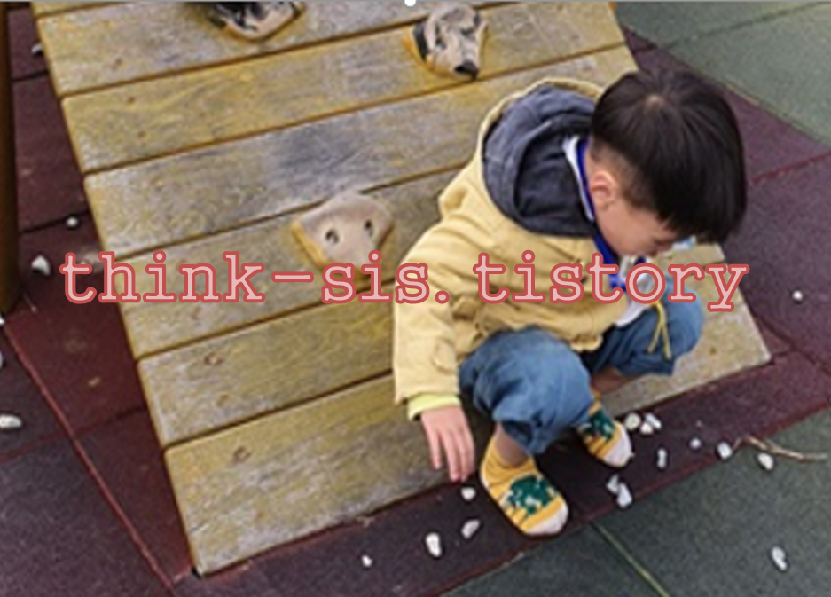

1. 영아기 놀이가 인지발달에 미치는 영향
영유아들은 놀이라는 자연스런 형태로서 자신들의 의사를 전달한다. 영유아들은 비록 말하기를 매우 좋아하는 아이일지라도 놀이를 통해서 그들이 생각한 바를 완벽하게 표현할 수 있다. 영유아들이 다른 사람의 감정을 이해하거나 혹은 자신의 감정을 표현한다는 것은 무척 어렵다. 따라서 놀이는 영유아들에게 자신들의 감정을 전달하도록 도와주는 중요한 역할을 한다.

영아는 놀이를 하는 중에 매우 광범위한 인지능력의 향상을 경험한다. 감각운동기의 영아는 놀이를 통해 얻는 다양하고 풍부한 감각운동경험으로 인지발달이 촉진된다. 영아의 인지 발달에 영향을 주는 놀이를 살펴보면 다음과 같다. 블록을 늘어놓거나 쌓는 놀이, 점토를 뭉치고 나누며 변형시키는 놀이, 물이나 모래를 다양한 모양의 통과 틀에 채우고 쏟는 놀이 등 다양하다. 영아는 놀이를 통해 다양한 특성을 가지는 재료들을 자유롭고 충분한 시간동안 탐색하고 다루어보면서 자연스럽게 경험하게 된다.
영아들은 자신이 속한 세상에 대한 이해를 키워나가고, 즉 인지발달을 이루어 나갈 수 있다. 영아의 인지발달과 놀이의 상관관계를 분석한 여러 연구에 따르면, 생활 속에서 놀이를 통해 풍부한 지적자극을 받은 영아들은 지적자극이 결핍된 환경에서 성장한 영아에 비해 뇌의 구조와 무게에서 큰 차이를 보인다. 즉, 놀이는 영아에게 적절한 지적 자극을 풍부하게 제공하여, 뇌 발달과 인지발달을 촉진하는 것이다.
놀이와 영아의 인지발달의 관계에 있어 그 상관관계를 밝히는 연구들은 상당수 진행되었다. 그럼에도 불구하고 그 인과관계를 주장하는 것에는 무리가 있다. 또한, 다양한 놀이 재료를 제공한다고 해서 반드시 영아의 인지발달에 긍정적인 영향을 준다고 보기도 어렵다. 실제로 영아의 경우, 함께 놀이하는 성인 양육자나 교사가 어떤 상호작용을 하는 지, 어떤 방식으로 놀이 재료를 탐색하고 다루는 지, 영아가 재료를 어떻게 이용할 수 있도록 지원하는지, 실제로 영아가 어떤 방법으로 재료를 이용하는 지 등의 요소가 더 중요하다.
2. 유아기 놀이가 인지발달에 미치는 영향
놀이는 유아의 뇌 발달을 촉진시킨다. 유아는 놀이를 하는 동안 신경세포 사이의 연결이 활성화되고, 이에 따라 뇌 발달이 활성화된다. 놀이에서 활성화 되는 뇌의 영역은 계획, 조직화, 감독하는 역할을 담당하고 있어 뇌의 효율성을 높인다. 즉, 충분히 놀이하지 못한 유아는 뇌 발달과 융통성이 손상된다. 특히 뇌를 자극하는 가장 좋은 방법인 비구조화된 놀이를 통해 유아는 문제해결능력을 기를 수 있고, 창의적으로 생각하고 추론하는 능력을 발달시키게 된다. 유아의 놀이가 인지발달에 미치는 영향은 크게 지식의 습득, 언어 발달, 문제 해결 능력 향상, 창의성 향상의 측면에서 살펴볼 수 있다.
1) 놀이를 통해 지식을 습득한다. 유아는 놀면서 다양한 사물을 경험하고, 그 특성과 사물 간 관계성을 경험한다.
2) 놀이를 통해 언어를 발달한다. 놀이를 통해 새로운 언어를 고안한다.
3) 놀이를 하며 또래, 교사, 양육자로부터 새로 배운 언어를 사용하고 연습해볼 수 있다.
4) 놀이하는 과정에서 유아는 수학적 기술을 배울 수 있어 형식적 수학에 대한 기초를 형성할 수 있다.
5) 놀이를 하며 다양한 어휘를 습득하고 상황과 역할에 맞는 언어를 사용법을 익힌다. 놀이 과정에서 유아는 언어 사용 뿐 아니라, 다른 사람의 말과 행동에 관심을 가지고 경청하는 자세를 기를 수 있다.
6) 놀이를 통해 문제 해결능력을 향상한다. 놀이는 생각하고, 기억하며 세상을 검증해 볼 기회를 제공한다.
7) 놀이를 하는 동안 새로운 사물을 탐색하고, 다양한 방법으로 실험해본다.
8) 놀이 상황에서 시도하기 어려웠던 방법과 기술을 사용하여 반복하여 연습한 후 실제 상황에서의 문제를 해결한다.
9) 놀이를 통해 자신의 창의성을 발달해나간다. 자신의 생각과 감정을 있는 그대로, 혹은 상상하여 표현한다.
이러한 과정 속에서 유아의 창의성이 다양한 방식으로 사물에 접근할 수 있는 분위기를 형성하고, 사물이나 사건에 대한 다양하고 독특한 반응을 끌어낼 수 있다. 놀이를 하는 동안에서는 실제 상황에서 경험하는 제약에서 벗어나게 되는데, 이는 눈에 보이는 것을 넘어서서 새로운 관계를 만들어내고, 상상적인 활동에 참여하며 창의성을 발달할 수 있게 된다.
3. 놀이 교육은 부모와 자녀관계의 원동력
부모는 자녀의 최고이자 최초의 친구이며 교사다. 부모와 자녀 관계는 여러 가지 놀이를 통해 다양한 관계를 쌓으며 아이의 발달에 가장 큰 원동력이자 사회화의 기초가 된다. 하지만, 아이들의 놀이에 잘못 개입하면 도리어 몰입해서 진행하고 있는 놀이를 방해하고 중단시킬 수 있으므로 부모는 자녀의 놀이를 잘 관찰하여 놀이에 언제 개입하는 것이 좋을지 어떻게 개입해야 할지를 잘 결정해야 한다.
첫째, 영유아들은 놀이 상황의 모든 요소들에게서 인지적 불일치를 인식하게 된다. 말하자면 놀잇감， 놀이장소，놀이친구，놀이주제，놀이시간 등 놀이가 이루어지는 상황에서 이전에 해오던 놀이상황과 다른 점이나 새로운 점을 발견하고 갈등을 느끼게 된다면 영유아는 불일치를 경험하는 것이다.
둘째, 영유아는 놀이를 통해 환경을 통제하고，변화를 일으키며，자신이 한 일에 대한 인과관계를 인식하면서 자신의 능력을 확인한다는 것이다. 이 같은 견해는 인간은 본래 환경 통제의 욕구가 있는 존재라는 데에서 출발한다.
셋째, 영유아놀이는 지식의 습득, 언어 발달, 문제 해결능력의 향상, 창의성의 발달을 돕는다. 이는 놀이 상황에서 지식과 기술을 습득하고, 언어 사용과 문제 해결을 경험하고 연습하여 실생활에 적용할 수 있도록 돕고, 그 과정에서 다양한 방법을 모색하여 창의성을 길러주는 것이다.
4. 영유아의 놀이는 마음의 안전지대-인지발달과 전인적 발달
놀이는 어른이 정해놓은 목표도 없고 어떤 결과물이 꼭 나와야 되는 부담도 없으므로 그저 좋고 즐거울 수밖에 없다. 따라서 놀이는 영유아가 나름대로의 생각과 느낌을 펼칠 수 있는 안전지대라고 할 수 있다. 루소와 같은 자연주의자나 프로이트와 같은 정신분석학자들이 주장했던 대로 규칙과 자기 조절력이 있다. 놀이는 자연과 같은 성격을 지닌다.
영유아가 놀이에 관심을 보이지 않는 데도 억지로 놀이에 몰두하도록 이끌기 위하여 어른이 자주 칭찬이나 보상을 하는 것은 바람직하지 않다고 할 수 있다. 오히려 무분별한 칭찬이나 보상에 길들여진 영유아는 놀이에 대한 흥미보다는 어른이 제시하는 놀이에 수동적으로 참여하게 될 것이다. 이렇게 영유아의 놀이는 인지발달과 긍정적인 상관관계를 보인다. 이에 교사는 적절한 놀이를 지도하기 위한 방안을 강구해야 할 것이며, 지도를 통하여 영유아의 놀이가 발달하고 궁극적으론 영유아의 전인적 발달을 이루게 해야 할 것이다.
참고자료
곽혜경,박애경,백혜리,조혜경(2010). 놀이지도. 창지사.
김수영 외(2002). 유아놀이의 이론과 실제. 양서원.
심우엽(2005). 놀이와 아동발달 및 교육. 초등교육연구.
이숙재(2002). 개정 유아를 위한 놀이의 이론과 실제. 창지사
전성연(2001). 교수-학습의 이론적 탐색. 원미사.
Hughes F. P. (2012). 놀이와 아동발달. 시그마프레스.